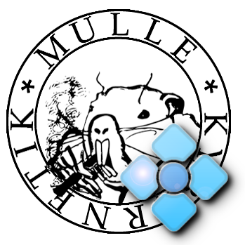

Edit
Set up the editor of your choice with one command, or just use any desktop GUI or the terminal. mulle-sde never ties you to an IDE vendor.
$ mulle-sde edit
cross-platform · command-line · bash
mulle-sde is a command-line IDE and dependency manager built for C and Objective-C development (C++ very likely works too). Think npm or virtualenv for C languages: one uniform setup that gets you going in seconds, with a project that still builds next year — and the decade after.
~ $ mkdir myproject && cd myproject
~/myproject $ mulle-sde init
# pick a project type, get a working environment
~/myproject $ mulle-sde craft
# fetch, build and install dependencies, then the project
~/myproject $ mulle-sde run
Hello, world!
~/myproject $ One simple principle runs through everything. You work with files the way you always have; mulle-sde keeps the build machinery in step and does the heavy lifting of fetching and building dependencies.
Set up the editor of your choice with one command, or just use any desktop GUI or the terminal. mulle-sde never ties you to an IDE vendor.
$ mulle-sde editChanges in the filesystem are picked up and turned into build system files and headers. Add, move or rename a source file, then reflect — no project file juggling.
$ mulle-sde reflectFetch dependencies, build them and install them local to your project. Then build the project itself. Everything reproducible, everything in one tree.
$ mulle-sde craftMulleSDE is not a single command you learn — it is a way of working. Here is the functionality, not the command list.
Every project gets its own isolated, per-project environment: settings, paths and dependencies live with the project instead of polluting your machine. Separate projects stop fighting over versions.
Fetch archives and git repositories — recursively — build them and install them locally or wherever you choose. Build instructions for third-party projects are loaded from GitHub, so recipes travel with the ecosystem.
Your directory structure is the project. mulle-sde transforms it into the files your build system wants, and speaks to many of them — CMake, make, meson, autoconf and more — and parallelizes the build.
Create well-formed source files from templates instead of copying stale boilerplate. New classes, headers and executables start consistent every time.
Remote files and repositories can be pulled down and placed anywhere in your project tree — vendoring, generated assets or external sources, all tracked by the project.
Extensions add languages and build tools, callbacks hook into reflection. It is bash all the way down, so you can read it, change it and automate it without a build step of its own.
The same setup and the same workflow whether you are on Linux, macOS, a BSD, SunOS, Android or Windows. Keep the dependency isolation of Docker without the container overhead.
No IDE lock-in, no opaque project databases, no cloud. Plain files, plain tools and a pure command-line interface mean a project you can still build years from now.
Self-explanatory by design: help texts, howtos and file comments describe the workflow, and the filesystem-driven model is deterministic — a good fit for both humans and coding agents.
The point of mulle-sde is uniformity. Wherever you develop, the commands, the environment and the results are the same.
| Platform family | Notes |
|---|---|
| Linux | Primary development platform |
| macOS | Native toolchains, no Xcode project needed |
| BSD | FreeBSD and friends |
| Windows | MinGW and WSL |
| Android | Cross-compilation targets |
| SunOS | Illumos / Solaris lineage |
MulleSDE bootstraps itself and its own toolchain. Once installed, you rarely touch the lower layers directly.
Install the mulle-sde developer environment. It sets up mulle-sde together with the required dependencies:
# see mulle-sde-developer for your platform
$ open https://github.com/mulle-sde/mulle-sde-developerThe one-liner installs only the latest mulle-sde into
/usr/local (with sudo):
$ curl -L 'https://github.com/mulle-sde/mulle-sde/archive/latest.tar.gz' \
| tar xfz - && cd 'mulle-sde-latest' && sudo ./bin/installer /usr/localCreate a project, pick a type at the prompt, and craft it:
$ mkdir myproject && cd myproject
$ mulle-sde init
$ mulle-sde craftBuilding without mulle-sde.
A mulle-sde project is still a normal CMake project, so you can build it
directly with cmake — mulle-sde mostly orchestrates the build
systems for you. What you lose is dependency management: without
mulle-sde you must provide the project's dependencies yourself. (The
mulle-core
amalgamation is the exception — it bundles its constituents, so it needs
nothing extra.)
MulleSDE strives to explain itself: every command has help, most have sub-help, and the workflow is documented as you go.
A short introductory guide that gives a good overview of the whole system, including how to use mulle-sde in an existing Makefile project with minimal friction.
More in-depth information that does not fit into the help texts: concepts, workflows and recipes for the commands beneath mulle-sde.
Read the built-in topics without leaving the terminal. e.g. learn why a test directory is an isolated mulle-sde project:
$ mulle-sde help
$ mulle-sde howto testing